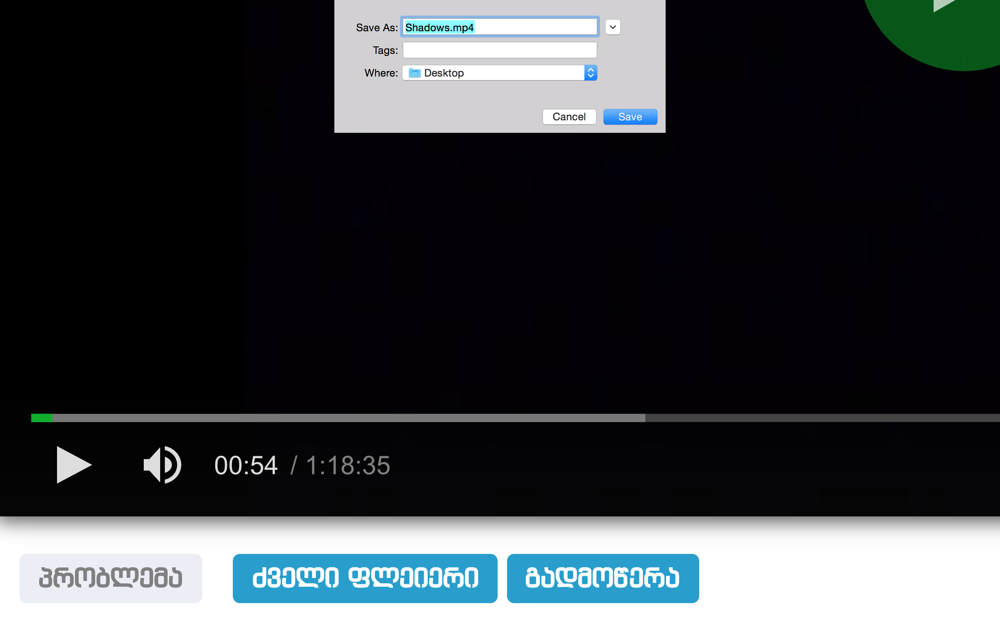
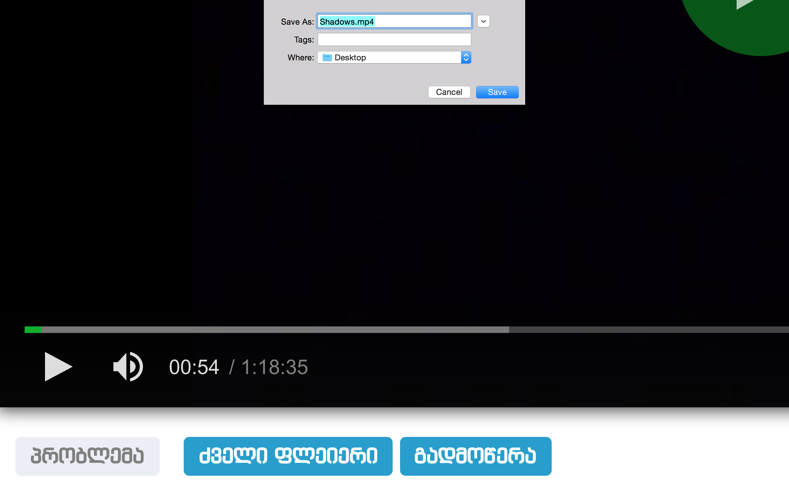

Imovies.ge
Imovies.ge is extension which allows you to download movies from imovies.ge Just download the project, drag it to extensions page and enjoy!

Note The download button will appear only after ad is played.
Imovies.ge is extension which allows you to download movies from imovies.ge Just download the project, drag it to extensions page and enjoy!

Note The download button will appear only after ad is played.